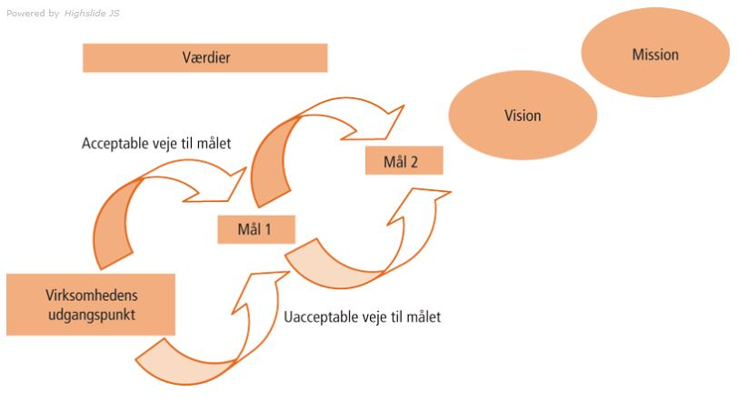
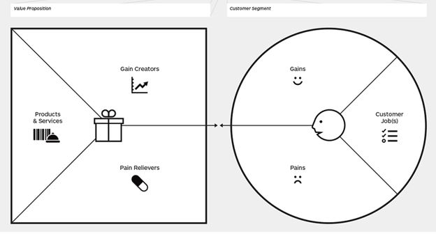
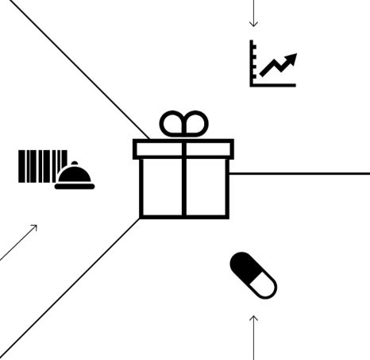

Virksomhedens forretningsmæssige grundlag og multimediedesignerens rolle
Der findes forskellige typer virksomheder:
- Produktionsvirksomheder
En produktionsvirksomhed fremstiller vare. - Handelsvirksomheder
En handelsvirksomhed køber og sælger vare, uden selv at udarbejde varen - Service virksomheder
Service virksomheder sælger uhåndgribelige vare/tjenesteydelser, hvor varen/ydelsen ikke kan lagres.
Virksomhedens ide og mål
Virksomhedens ide:Kort fortalt er en virksomheds idé en beskrivelse af virksomhedens eksistensberettigelse. Det er det strategiske grundlag, som virksomheden skal drives på. Hver virksomhed bygger på deres egen ide. En bager, tømre og webdesigner, har forskellige idegrundlag.
Det er derfor vigtigt at opstille mål som er:
- Præcise
- Realistiske
- Tidsbestemte
- Målbare
Virksomhedens mål:
Når man har virksomhedens idé udformer man virksomhedens mål. Virksomhedens mål er de mål virksomheden gerne vil opnå.
En virksomheds mål kan for eksempel være:
- Virksomheden skal vækste med mindst 2% hver år
- Virksomheden åbner 2-3 nye butikker hver år
- Tidsbestemte
- Omsætningen skal i løbet af 2 år mindst udgøre 5,4 mil./li>
Virksomhedens vision / mission
Mission er er den værdi virksomheden gerne vil skabe. Hvorfor gør virksomheden som de gør og for hvem gør de det? Missionen er beskrivelsen af kerneforretningen og hvilke interesser den tjener. Et eksempel på en mission kan være Disney når siger ”We make people happy”.
Vision skal forstås som de drømmebillede virksomheden har om fremtiden. Det kan eksempelvis være hvordan virksomheden gerne vil se ud om 10 år, hvad vil de gerne opnå. Som eksempel kan vi tage Falck som har en vision om at udvikle en international virksomhed, som både tager sig af redning, healthcare, sikkerhedstræning og assistance.
- Hvem er vores kunder?
- Hvilke behov tilfredsstiller vi?
- Hvordan gør vi det?
- Hvad skal vi og hvad må vi ikke gøre?
- Hvad skal være virksomhedens kernekompetencer?

Værdigrundlag
En virksomheds værdigrundlag er et samlet sæt af værdier, som virksomhedens ledelse og medarbejdere er enige om. Virksomhedens værdier bruges som en rettesnor for virksomhedens medarbejdere. Det kan eksempelvis være:
- Hvilken adfærd ønskes i virksomheden?
- Hvad skal medarbejderne være drevet af?
- Hvad stræber vi efter i virksomheden?
Vision og mission er med til at danne virksomhedens værdigrund.
Strategi overblik
Modellen er beregnet til at udarbejde en analytisk og målrettet planlægningsproces, hvor målet med arbejdet er fastlagt for os i forvejen. Først starter man med at analysere, virksomhedens nuværende position og derefter udvikler man strategier for hvor virksomheden skal være i fremtiden.
-
Strategisk analyse:
Her analyseres hvilke muligheder og trusler. Her anvender man virksomhedens interne styrker og svagheder for at identificere nødvendige forandringer. -
Strategisk udvikling:
Her fastlægger man vision, mission og værdigrundlag, som gør det muligt at opstille strategiske målsætninger, mål, strategier, handlingsplaner og en fordeling af ressourcer. -
Strategisk implementering:
Her implementeres vejen til målet, gennem kommunikation.
{kind=link}
Porters værdikæde
Værdikæden er en model der hjælper med at skabe overblik over virksomhedens aktiviteter samt funktioner, som virksomheden varetager. Porters værdikædemodel viser virksomhedens aktiviteter som en kæde, der i dens helhed skaber produktets eller serviceydelsens værdi for kunden. Modellen er designet til produktionsvirksomheder og består af 9 forskellige aktiviteter, som er opdelt i primære aktiviteter og støtte aktiviteter.
{kind=link}
De primære aktiviteter
Aktiviteterne vi finder i denne kategori, påvirker selve produktet eller serviceydelsen. Disse aktiviteter er med til at skabe produktet og produktet får mere værdi, efterhånden som det bevæger sig gennem kæden, lige fra man modtager råvarerne og kontrollere dem til videresalg. Og til sidst at yde service på det solgte produkt.
Her siges det, at kundens oplevelse er den vigtigste, da det er kunden, der skaber produktets værdi.
De fem primære aktiviteter er følgende:
-
Den indgående logistik
Aktiviteter såsom bestilling, ekstern transport, modtagelse og kontrol. Intern transport og lagring af råvarer. -
Produktion
Er selve produktionen fra råvarer til færdigvarer ”hvor mange sættervarer skal der produceres?” -
Den udgående logistik
Modtagelse af den fremstillede vare fra produktionsafdelingen. Omfatter ekspedition, lagring, distribution og modtagelse af ordre fra kunder. -
Marketing og salg
Planlægning af salg, fastlæggelse af priser, annoncering og reklamer. -
Service efter salg
Omfatter produktets installation hos kunden, såsom brugervejledninger, reklamationer og garantiordninger.
Støtteaktiviteterne
Støtteaktiviteterne ses som de nødvendige aktiviteter, for at få produktet ud til de forskellige forhandlere og dermed laver de en slags service for de primære aktiviteter, da støtteaktiviteterne omdanner råvarer til færdigvarer. Støtteaktiviteterne gør det lettere for produktionsafdelingen at planlægge samt gennemføre produktionen.
-
Virksomhedens infrastruktur
Det kan fx være ledelse samt planlægnings, økonomi og it systemer. -
De menneskelige ressourcer (human ressource)
Omfatter aktiviteter, hvis formål er at rekruttere, uddanne, udvikle og fastholde medarbejdere. -
Produkt- og teknologiudviklingen
Omfatter forsknings og udviklingsaktiviteter, hvis formål er at udvikle nye produkter. -
Indkøb/forsyninger
Omfatter aktiviteter såsom indkøb af varer, serviceydelser, inventar, maskiner, bygninger og valg af leverandør.
SWOT-modellen
SWOT modellen bruges til at analysere virksomhedens styrker og svagheder. Modellen er delt op i Virksomhedens interne- og eksterne situation.
Den interne situation
Inddeles i stærke og svage sider, som er forhold som virksomheden selv kan påvirke. Under stærke sider kan det fx være at vi har et uddannet personale. Og den svage side kan eksempelvis være at man er ukendt på markedet.
Den eksterne situation
Er delt op i muligheder og trusler, som virksomheden ikke kan have indflydelse på. Truslerne kan være en finanskrise eller at der kommer nye udbydere i samme branche. Mulighederne kan være at staten giver tilskud til produkterne eller at man er den eneste på markedet der tilbyder produktet.
{kind=link}
Forretningsmodel
- Hvordan skabes der værdi, for hvem og hvordan?
- Indeholder indtægter og udgifter for virksomheden
- Modellen ændres og tilpasses løbende, så den passer til den virkelighed virksomheden er i. Det kan eksempelvis være at man får flere konkurrenter eller en ny målgruppe og er derfor vigtigt at tilpasse den.
- Bruges som et strategisk og styringsværktøj
Forretningsplan
- Beskriver målene og midlerne der bruges til at gennemføre den planlagte udvikling.
- Forretningsmodellen indgår typisk i forretningsplanen.
- -Beskriver konkurrence og risikosituationerne.
- -Er en konkret plan der er velskrevet for virksomhedens mål og planer.
Business Model Canvas
Denne model bruges til at beskrive og samtidig udvikle en forretningsmodel for enten en virksomhed eller et projekt. Modellen består af nogle byggesten som påvirker hinanden og kan derfor bruges til at udvikle en virksomhed eller et projekt. Det forudsætter at man har et koncept som man vil lave en forretningsmodel for.
Byggestene
- Value propositions (produktet) Hvilket behov opfylder vores produkt hos kunden?
- Customer segments (kunder) Hvem er kunderne
- Key partners (nøgle partnere) Partnere og leverandører der er vigtige for at det er muligt
- Key activities (nøgle aktiviteter) De vigtigste nøgleaktiviteter der skal udføres for at skabe værdi for kunden
- Key resources (nøgle ressourcer) Ressourcerne som er en nødvendighed for at skabe værdi hos kunden
- Customer relationship (kunderelationer) Relationen mellem kunder og virksomheden
- Channels (kanaler) Hvordan gør vi og hvilke kommunikationskanaler bruger vi for at nå kunden
- Revenue streams (indtægter) Hvordan tjener vi penge?
- Cost Structure (omkostninger)Hvilke omkostninger er der?
De 7 arketyper af digitale forretningsmodeller
Denne model bruges til at beskrive og samtidig udvikle en forretningsmodel for enten en virksomhed eller et projekt. Modellen består af nogle byggesten som påvirker hinanden og kan derfor bruges til at udvikle en virksomhed eller et projekt. Det forudsætter at man har et koncept som man vil lave en forretningsmodel for.
-
Den digitale købmand
En fysisk butik, der supplerer sig med salg via. Internettet. Et eksempel kan være Elgiganten, der har en fysisk butik, men samtidig har en webshop de sælger over. Elgiganten bruger Internettet til at brande, annoncere, vise varesortiment og vejledninger. -
Webshoppen
Denne arketype køber hos grosister og sælger varerne på internettet, uden brug af fysisk butik. Et eksempel kunne være saxo.com, som udelukkende sælger på Internettet. -
Den digitale producent
Er typisk et traditionelt fysisk produkt, som er blevet digitaliseret. Et eksempel kan være et ur, hvor er er indbygget GPS og onlinetracking. -
Softwareproducenten
Kunne eksempelvis være Adobe, som har udviklet et stykke software der sælges med licenser til virksomheder og private, hvor der er mulighed for direkte betaling. -
Den digitale platform bygger
En der udvikler sin egen digitale platform online og opbygger tætte relationer til brugerne, da platformen er gratis for forbrugeren. Virksomheden skal betale for at nå brugerne. Et eksempel kan fx være Google -
Appopfinderen
Bygger en app der dækker et behov fx kunne det være mobilepay. -
Wiki skaberen
Brugerne er både forbrugere og samtidig med til at skabe indholdet.
Value Proposition Canvas
Er en procesøvelse der anvendes til at indsamle, sammenholde og evaluerer indhold fra en organisation med målet om at belyse værdien man ønsker at skabe for kunden via. et nyt produkt eller service. Dette værktøj kan også bruges som et styringsværktøj, så man sikre at man tænker ens værdier gennem udviklingen på tværs af organisationen. I procesøvelsen kan man diskutere hvilken oplevelse man ønsker at kunden skal have. Processen kan gentages gennem udviklingen. Der bruges kvalitative og kvantitative undersøgelser af kundernes ønsker og behov. Value proposition bruges som et slags plugin til Business Model Canvas, som giver mulighed for at gå mere i detaljer med at beskrive Value Proposition, så det skaber mere sammenhæng mellem forretningsmodellen, kundesegmentet og Value Propsition.
Beskriv dit kundesegment:
- Beskriv hvilke job kunderne har som skal løses, altså hvilket behov de ønsker at få opfyldt. Det kan eksempelvis være at de ønsker sig at få en sms.
- Hvilke ”pains” oplever kunderne? – Hvilke problematikker oplever kunderne, det kan eksempelvis være at de synes kvaliteten i branchen er generel dårlig, pris eller andet.
- Hvilke ”gains” ønsker de at opleve? Det kunne være: ”Længere batteritid, lækkert design eller prestige, man får ud af produktet.
Illustration

Kilde:
https://lederindsigt.dk/vaerktoejer-skabeloner/strategi-og-forretningsudvikling/value-proposition-canvas/
For at bruge modellen starter man med modellens kundeside.
Herefter designes Value Proposition
-
Produkter og services
Produkterne og servicen virksomheden har eller kan udvikle for at løse kundernes jobs -
Pain relievers
Produkterne og servicen virksomheden har eller kan udvikle for at løse kundernes jobs -
Gain creators
Hvordan kan produktet / servicen skabe værdi for kunden?
Man skal altid sørge for at ens pain relievers matcher de pains kunderne har. Modellen giver en mulighed for at teste, om det billede man har af målgruppen, stemmer overens med virkeligheden. Har man flere målgrupper, kan man tegne modellen for hver af dem.
Illustration

Kilde:
https://lederindsigt.dk/vaerktoejer-skabeloner/strategi-og-forretningsudvikling/value-proposition-canvas/
Kilder:
https://www.business.dk/vaekst/hvordan-formulerer-vi-mission-og-vision
http://www.erhvervssparring.dk/vaerktojer/mission-vision-kaernevaerdier/
http://www.laegaard.org/blog/tankerne-bag-strategi-i-vindervirksomheder/
http://slideplayer.dk/slide/2834048/
https://virksomhedb.systime.dk/index.php?id=3385
https://virksomhedb.systime.dk/index.php?id=3385
https://innovation.sites.ku.dk/metode/business-model-canvas/
http://w2l.dk/file/525561/arketyper.pdf
https://lederindsigt.dk/vaerktoejer-skabeloner/strategi-og-forretningsudvikling/value-proposition-canvas/
https://en.wikipedia.org/wiki/Business_Model_Canvas